|


|
Piramides
» exacte locatie
 Taxichauffeur Mohammed staat om zes uur 's ochtends klaar bij de
ingang van de haven. De ingang wordt streng bewaakt en ze willen
altijd je paspoort zien. Na nog geen kwartier rijden is het tijd om te
tanken. Rijden op gas is het goedkoopst, helemaal vol voor 1 euro en
daar kun je 160 km mee rijden. Nog een half uur later weer vol tanken
zodat hij vanaf daar heen en weer naar Cairo kan rijden. Cairo is
enorm groot en erg druk met verkeer. Siebe leert het verschil tussen
een bus en een vrachtwagen en roept ook 'auto', 'motor' en 'tuk tuk'.
Na de piramides al een paar keer tussen de flats door te hebben gezien
staan ze ineens voor onze neus.
Taxichauffeur Mohammed staat om zes uur 's ochtends klaar bij de
ingang van de haven. De ingang wordt streng bewaakt en ze willen
altijd je paspoort zien. Na nog geen kwartier rijden is het tijd om te
tanken. Rijden op gas is het goedkoopst, helemaal vol voor 1 euro en
daar kun je 160 km mee rijden. Nog een half uur later weer vol tanken
zodat hij vanaf daar heen en weer naar Cairo kan rijden. Cairo is
enorm groot en erg druk met verkeer. Siebe leert het verschil tussen
een bus en een vrachtwagen en roept ook 'auto', 'motor' en 'tuk tuk'.
Na de piramides al een paar keer tussen de flats door te hebben gezien
staan ze ineens voor onze neus.
In Gizeh staan drie piramides. De piramide van Cheops is met 137 meter
de hoogste van de drie. De andere twee zijn die van Chefren
(waarschijnlijk de zoon van Cheops) en Mykerino. Ze zijn gebouwd rond
2500 v. Christus. Ik vind ze zo hoog dat ik er duizelig van word als
ik bedenk hoe ze de piramides hebben kunnen bouwen. Erg indrukwekkend.
3 Maanden per jaar, als de Nijl overstroomd was, werd er hard gewerkt.
Men denkt dat ze begonnen met een kleine piramide te bouwen en die
groter maakten door er steeds een schuine zijkant tegen aan te bouwen.
Zo houd je altijd de vorm van de piramide in stand. We zijn een
piramide in geweest. Eerst via een tunnel naar beneden en daarna weer
omhoog tot in de schatkamer waar de koning begraven lag. De tunnel was
zo laag dat je gebukt moest lopen. Niet echt makkelijk om zo het graf
te vullen. Siebe herkende de piramides van de foto's van Mohammed en
noemde ze 'pimi'. Interessant vond hij ze verder niet, het zand op de
grond was leuker.
Op de terugweg grote inkopen gedaan en voor het laatst goedkope diesel
in onze jerrycans getankt. Om de diesel te haven in te mogen smokkelen
moet je de bewaker omkopen. Mohammed doet dit vaker en het loopt
gesmeerd. Siebe mag nog even rondlopen op het plein en heeft de
grootste schik. De weg naar de speeltuin weet hij ook en er al naar
toe lopend roept hij 'peeeeltuin'. 's Avonds in de kuip genieten we na
van de piramides onder het genot van een stokbroodje met brie. Morgen
gaan we verder door het kanaal en komen we uit in de Middellandse Zee,
dat klinkt ineens dicht bij Nederland ;-).
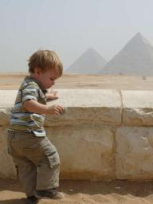
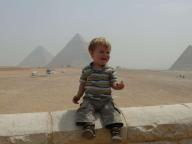
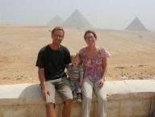
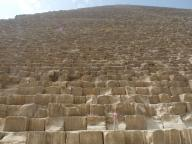
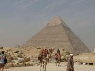
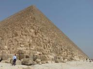
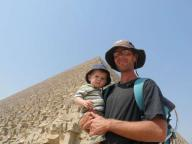
|
|
|

Golf van Suez
» exacte locatie
De afgelopen dagen zijn we weer regelmatig actief geweest in het Rode
Zee casino. Het begon met een windstille middag waarop we ons ernstig
afvroegen waarom ons anker nog in de grond zat. Het weerbericht
voorspelde echter voor de nacht een windkracht drie en uit ervaring
weten we dat dat hier windkracht vijf betekent. Maar wat bleek,
windstilte de hele nacht! Vreselijk om vanuit je bed de boot zo stil
als maar kan te voelen liggen. Gemiste kans dus. Zodra het licht was
hebben we direct het anker opgehaald en zijn we op weg gegaan. Nog
steeds geen wind. Maar dat veranderde helaas snel. Kleine golfjes die
langzaam grotere golfjes en daarna golven werden. Na een paar uur
besloten we maar weer af te slaan richting een ankerplek die daar
gelukkig lag. De hele middag wind gehad en we waren blij dat we niet
doorgeploeterd hadden. Tegen de avond ging de wind weer helemaal
liggen. Gaan dus. Na nog geen uur was dat allemaal weer anders en
stond er een stabiele windkracht vijf recht op de neus. Geen ankerplek
in de buurt en we wilden ook niet omkeren. De golven waren niet zo
vervelend als normaal, dus we besloten maar door te gaan. En na een
paar uurtjes werd alles weer rustig en konden we de hele nacht goed
voortgang maken. We passeerden de ene na de andere ankerplek zonder te
hoeven stoppen. Ook gedurende de volgende dag bleven we gewoon
doorvaren. Het ging allemaal erg lekker. Het weerbericht voorspelde
wel harde wind voor het eind van de dag, maar we waagden het erop.
Toen we 's middags ons anker lieten vallen begon de wind net aan te
trekken. Een uur later was het windkracht zes die als een fohn
aanvoelde omdat het rechtstreeks uit de woestijn kwam. We waren erg
tevreden met onze voortgang. 's Avonds toen we net een uur in bed
lagen werd ik even wakker en merkte ik dat alle wind weer weg was. Het
motto blijft "gaan als het kan", dus slapen: niks daarvan. Anker op en
weg. Het begon allemaal weer prachtig, maar vanaf elf uur 's avonds
was het al weer afgelopen. Een gehak en gestamp, vreselijk. We konden
ook geen kant op. Onze route was vlak langs de scheepvaartroute omdat
er in de rest van de Golf van Suez onverlichte afgedankte
olieplatformen liggen op onbekende locaties. Een beetje Russisch
roulette dus om 's nachts op verkenning te gaan buiten de veilige
route. Vlak voor het licht werd staken we de scheepvaartroute over en
konden we met het eerste daglicht doorzeilen naar een ankerplek. Geen
fraaie tocht, maar wel weer iets opgeschoten.
De plek waar we terecht waren gekomen was vergelijkbaar met Port
Ghalib in de zin van dat het een toeristisch nepdorp was. Alleen dit
was compleet vervallen met afbladderend pleisterwerk en geen gast te
bekennen. Het enige dat nog leefde was een kitesurfclub. Begrijpelijk,
want het waait hier dus erg vaak en ook hard. Ik dacht even leuk
kitesurfles te nemen, maar dat bleek een slordige 300 euro voor een
dag te kosten. Nee bedankt. Wat wel erg mooi was is dat er totaal geen
controle was op wat er daar zo gebeurde. Dat betekende dat ik
ongestoord diesel kon gaan halen met een taxi bij het tankstation.
Officieel is dat smokkelen en worden jachten geacht in de jachthaven
te tanken voor 75 eurocent per liter. Maar aan de pomp betaal je
slechts 15 eurocent. Dat was voor de 270 liter die ik nodig had een
leuke meevaller.
Vanochtend hebben we zonder drama's een kleine sprong gemaakt van 2
uur varen naar de volgende ankerplek Ras Sudr op het Sinai
schiereiland. Onderweg kwam er een groep dolfijnen naast de boot
zwemmen en ze deden echt goed hun best om er iets leuks van te maken.
Siebe vond het geweldig. Nu is het nog 25 mijl naar Suez. Onder
normale omstandigheden kost dat ons een uur of zes. Het weerbericht
voor morgen en overmorgen ziet er weer goed uit. We weten niet meer
precies wat dat zegt, maar hoe dan ook denken we er binnenkort echt
wel te zijn.
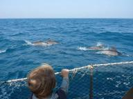
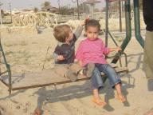
|
|
|
Gokspel
» exacte locatie
Dat varen in de Rode Zee heeft wel iets weg van een gokspel. Wanneer
moet je zeggen dat je genoeg winst hebt en stoppen? Vanaf Dolphin Reef
hadden we het plan om anderhalf etmaal te varen naar Safaga. Daar
begint een gebied met een hele serie ankerplaatsen vlak bij elkaar.
Dat betekent dat je in geval van plotselinge tegenwind vrij snel
ergens beschut kan liggen. De tocht naar Safaga toe echter biedt geen
goede uitwijkmogelijkheden op de plaats Port Ghalib na. Port Ghalib
ligt op ongeveer een etmaal varen vanaf Dolphin Reef. Het weerbericht
liet in eerste instantie twee etmalen goed weer zien, maar later kromp
dat alweer naar anderhalf. Dus zo gauw de wind eind van de middag op
Dolphin Reef begon te minderen zijn we uitgevaren om zoveel mogelijk
te profiteren van deze kans. De zee was helaas nog behoorlijk onrustig
en tot middernacht voeren we vrij langzaam en oncomfortabel. Daarna
ging het een stuk sneller en rustiger. Aan het eind van de volgende
dag waren we ter hoogte van Port Ghalib en moest er besloten worden.
Het nieuwste weerbericht liet zien dat er nog twaalf uur rustig weer
voor de boeg lagen. Dat zou dus net moeten kunnen en we besloten door
te varen. De motor zetten we wel behoorlijk hard aan. Veel lawaai en
een hoog brandstofverbruik, maar we wilden niet riskeren te laat te
zijn zoals met onze tocht naar Dolphin Reef toe. Het leek allemaal
lekker te gaan tot 02.00 uur 's nachts. Toen kregen we eerst een paar
vlagen recht van voren en daarna stond er in nog geen half uur tijd
een dikke windkracht zes. Met geen mogelijkheid meer tegenin te komen.
We waren nog maar vier uur van ons doel verwijderd met onze oude
snelheid, maar met deze tegenwind zou het nog zeker twaalf heel
oncomfortabele uren gaan duren. Bovendien liet het volgende
weerbericht zien dat de wind nog verder zou toenemen. We hadden er
geen zin in. Dus we besloten dan maar om te keren en acht uur lang
terug te zeilen naar Port Ghalib. Het was leuk weer eens te kunnen
zeilen, maar erg jammer dat de richting zuid was! Daar kwamen we
enigzins teleurgesteld rond het middaguur aan. We waren te gretig
geweest.
Port Ghalib is een vreselijk nepdorp voor toeristen die daar in hun
all-inclusive hotels een week gaan zitten niksen. Het ligt midden in
de woestijn en er is in de wijde omgeving helemaal niets. Het enige is
een soort buitenwijkje waar het personeel woont en waar een
supermarkt, drogist, groenteman en kapper zitten. Dat was ook voor ons
de leukste attractie. Ilse is naar de kapper geweest en we hebben weer
eens betrouwbaar vlees kunnen kopen. Ook hadden ze eindelijk weer
kaas! Zowel Cheddar als Edam voor slechts 4 euro per kilo. Ook was er
een leuke harde geitenkaas te koop. Ja, kaas is belangrijk voor mij.
Verder is ons exra bemanningslid Erik hier van boord gegaan en met het
vliegtuig naar Nederland gevlogen.
Eergisteren diende zich weer een nieuw weather window aan. We zijn
weer vertrokken zo gauw als het kon. Volgens de voorspelling zouden we
nu in een keer Suez moeten kunnen halen. Maar gistermiddag betrok de
voorspelling al weer. Voor de nacht werd er een windkracht 2-3 uit het
noorden verwacht. Normaal geen probleem, maar hier nemen we geen
risico meer. Aan het eind van de middag lieten we ons anker vallen bij
een eilandje aan het begin van de Golf van Suez. En nog geen paar uur
later begon het te waaien. Binnen de kortste keren floot de wind weer
door het want en we waren maar al te blij deze keer niet zo hebberig
meer te zijn geweest.
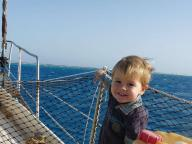
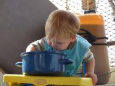
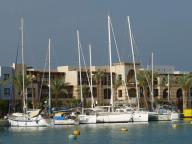
|
|
|
Dolphin Reef
» exacte locatie
De noordenwind blijft hard door het want waaien. De afgelopen dagen hebben we regelmatig een windkracht 5-6 gemeten. Niet echt een goed plan daar tegen in te gaan motorren. Ondertussen liggen wij beschut te wachten achter het Dolphin Reef tot de wind minder wordt. Ondertussen kijk ik vaak naar het water om naar dolfijnen te speuren. Eigenlijk hadden we verwacht na het horen van alle verhalen dat de dolfijnen continu rondom je boot zwemmen in afwachting van dat je met ze komt spelen. De realiteit komt op het volgende neer. In de lagoon waarin we liggen worden we altijd vergezeld door meerdere toeristenboten. Die houden de dolfijnen goed in de gaten dus waar wij zelf nog op hoeven te letten is of er bijboten met snorkelaars ronddobberen. Dan de verrekijker pakken of de dolfijnen er daadwerkelijk zijn. Dat zie je aan af en toe een vinnetje boven water. soms is het vals alarm maar vanmorgen dus niet. Ik zat al standby in m'n bikini (met warme kleren er over want echt heet is het niet meer). Dus hoppekee surfpak aan, snorkelspul in de bijboot gooien en er op af! Siebe in paniek, die vindt het tegenwoordig al niet grappig als we alleen maar rondlopen in zwemkleren. Bang dat we het water in gaan en niet meer terug komen. Maar Erik kan een huilende peuter wel aan dus we kunnen gerust op pad. Al vind ik het niet leuk Siebe zo achter te laten. Niet aan denken, op naar de dolfijnen. En daar zijn ze! Traag zwemmen ze rond en Joost springt er gauw in. Even later is het mijn beurt. Nog nooit heb ik zoveel dolfijnen van dichtbij gezien, echt zo gaaf! Heel bijzonder. Waarschijnlijk waren het er wel een stuk of dertig. Met een glimlach op ons gezicht varen we terug naar de boot waar Siebe aan het spelen is en blij is ons weer te zien.
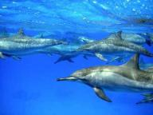
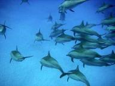
|
|
|

|

|
|
|